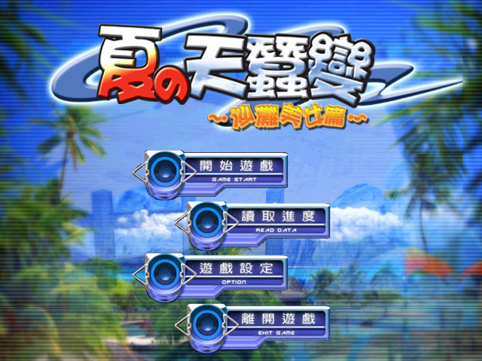
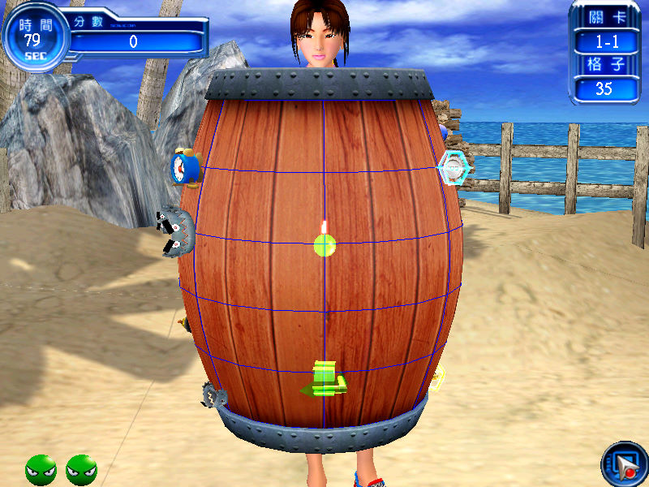

名稱：夏之天蠶變：沙灘美女篇 (中文版)
簡介：京群2004年出品的益智遊戲，玩家必須在限時內，在不被敵人碰到的情況下，畫線圍
出所有的區域。和其他類似遊戲不同的是，本遊戲必須走在指定的線上，且被敵人碰
到線時並不算陣亡，因此難度較低 [待補]。


保護：光碟，破解碼：
Glas.exe
75 20 6A 31
EB -- -- --
修改：Glas.exe
1.隻數不減
49 8B C1 89 4E 2C
90 -- -- -- -- --
操作：Space = 開始畫線